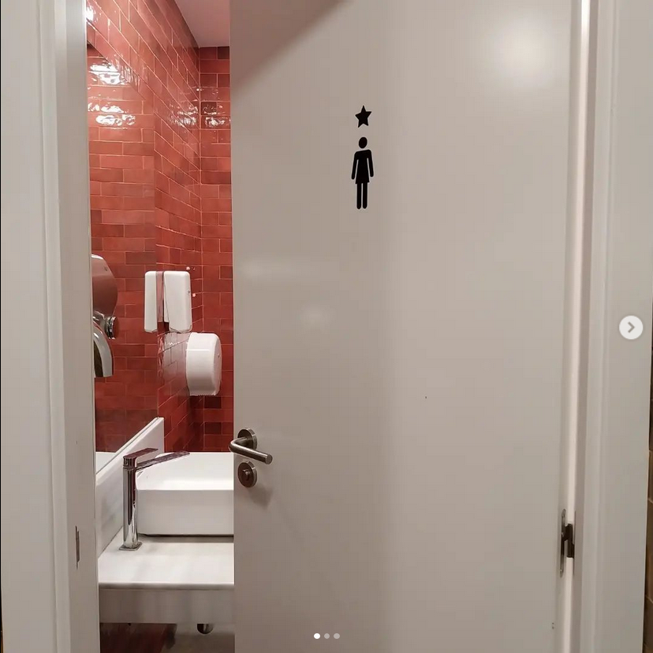
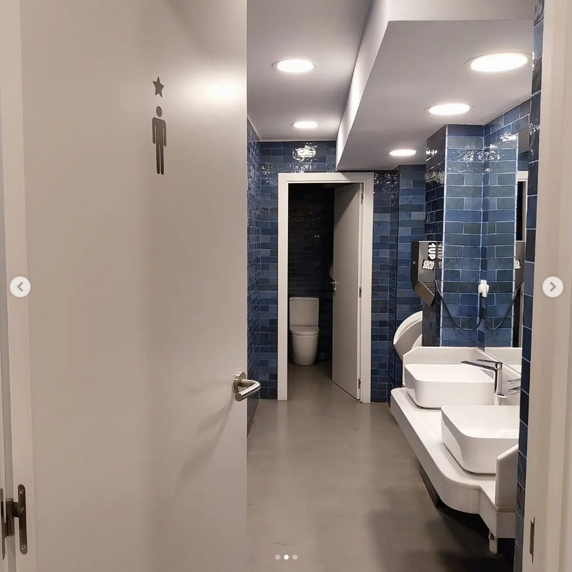

Binary gender concepts have become synonymous with public toilets. Toilet signs represent this quite visually: the little figurine with the triangular dress and the little figurine with the two legged pants are the identifying features of the toilet in most parts of the world. Architecturally, we have behind each of the signs a room, separated from the other by a wall. The separating wall between these two rooms is often an architectural unchangeable fact, immovable due to containing the central sanitary core (Kogan 2007).
This division is not only seared into our built environment and collective memory, but also in many legislations. Public restrooms in many countries are obligated by law to be separated for men and women in most publicly accessible buildings, such as schools, museums, city halls, concert venues, workplaces and many more (Bundesanstalt für Arbeitsschutz und Arbeitsmedizin 2013; Freie und Hansestadt Hamburg 2011; Goffman 1977, 315; Freie und Hansestadt Hamburg 2003).
However, bathrooms separated into these binary genders are probably, considering overall human history, a quite recent development. Terry Kogan is active in transgender and gay politics and as a professor of law at the University of Utah, he studied, among others, the intersection of history, laws and sex-segregation in toilets.
“[...], the legal requirement that public restrooms be sex-separated owes its origins to the early nineteenth century ideology that advocated a cult of true womanhood, a vision of the pure, virtuous woman protected within the walls of her domestic haven.” (Kogan 2007, 5)
According to Kogan, the first laws demanding the segregation of womens and mens toilets in the US were passed at the end of the 19th century as additions to workplace protection laws aimed mostly at women and children (Kogan 2007, 39f). Women, like children, were regarded as weaker and more vulnerable than men; the ones in need of extra protection at the workplace. Before the industrial revolution, Kogan elaborates, life for all genders was centered around home. With the industrial revolution the workplace first in manufactures and later in factories moved to the public realm. But in the wake of this societal shift, Victorian ideals only placed the men's life in the public space as women were to stay in the private, in the home. Thus the segregation of women's toilets at workplaces was not reasoned like today with “natural anatomical differences"(Kogan 2016), but with 19th Century cultural norms of morality and the idea of a “weaker sex” that has to be protected in public spaces.
“Private, sex-segregated lavatories were a modern and Western European invention, bound up with urbanization, the rise of sanitary reform, the privatization of the bodily functions, and the gendered ideology of the separate spheres.” (Gershenson and Penner 2009, 4)
Looking at German labor protection laws drafted and passed at the end of the 19th century, we can see similar patterns driven by the ideas of protecting the fragile women, just like children. Drafts and comments on a first empire wide factory law in 1877, make the difference between women as well as children to grown men clear (Quellensammlung Zur Geschichte Der Deutschen Sozialpolitik 1996, 3. Band: Arbeiterschutz:440, 455, 677). Suggesting that a missing segregation not only in the bathroom but as well in for example commonrooms would endanger both women and children and would represent a breach of modesty and public propriety. However, today labor legislation in Germany, lets me share a common room with my male colleagues but still demands segregation at the toilet (Bundesanstalt für Arbeitsschutz und Arbeitsmedizin 2013).
“gender segregation stemmed from anxieties about women`s entry into the workforce, and by extension the larger world.” (Art for a Democratic Society 2019, 21)
Today toilet segregation is presented as a result of anatomical differences between the sexes (David Serlin 2010). But as we have learned the legislation didn’t arise from anatomical consequences, but Victorian society. The Canadian-American sociologist and social psychologist Erving Goffman underlined already in 1977 that “there is nothing in this functioning [of sex-differentiated organs] that biologically recommends [sex] segregation”. However, he states that this segregation is “rather a mean of honoring, if not producing, this difference.” (Goffman 1977, 316; David Serlin 2010, 180). Besides this “honoring” of socially produced gender differences in the spatial configuration of separated rooms, it is often as well reflected in toilet signs, as the ones of the movie “Pretty Women” that you clicked to read this text. Most often the sign of the womens toilet is marked by a person wearing a dress, whereas the mens toilet is marked by a person wearing trousers, as well playing into stereotypical ideas of dress code. Sometimes these gender stereotypes implying differences are additionally underlined in architectural elements like red tiles for women and blue ones for men as witnessed in a coffee franchise in Barcelona (fig.1).
 
fig.1: Mens and womens restroom in a cafe chain in downtown BarcelonaSo is it not time after over a hundred years with changing perceptions of the place of women in society to rethink the architecture (and the legislation at the basis of it) that fosters one of our most basic human needs? With the understanding of gender being a product of “modern industrial society”(Goffman 1977, 301) should we not rethink spaces that reproduce outdated values of womanhood, reinforce wrong perceptions of biological facts and separate spheres?
Art for a Democratic Society. 2019. ‘The Capitalist Bathroom Experience. The Struggle for Dignity and Relief in the Capitalist Era’, 2019.
Bundesanstalt für Arbeitsschutz und Arbeitsmedizin. 2013. BAuA - Regelwerk - ASR A4.1 Sanitärräume. https://www.baua.de/DE/Angebote/Regelwerk/ASR/ASR-A4-1.html.
David Serlin. 2010. ‘Pissing without Pity - Disability, Gender, and the Public Toilet’. Edited by Harvey Luskin Molotch and Laura Norén. Toilet: Public Restrooms and the Politics of Sharing, NYU series in social and cultural analysis.
Freie und Hansestadt Hamburg. 2003. Hamburger Versammlungsstättenverordnung - VStättVO. https://www.landesrecht-hamburg.de/bsha/document/jlr-VSt%C3%A4ttVHApP12.
Freie und Hansestadt Hamburg. 2011. Bauprüfdienst (BPD) Anforderungen an den Bau und Betrieb von Schulen. https://epub.sub.uni-hamburg.de/epub/volltexte/2011/8653/pdf/bpd_03_2001.pdf.
Gershenson, Olga, and Barbara Penner. 2009. Ladies and Gents: Public Toilets and Gender. Temple University Press.
Goffman, Erving. 1977. ‘The Arrangement between the Sexes’. Theory and Society 4 (3): 301–31.
Kogan, Terry. 2007. ‘Sex-Separation in Public Restrooms: Law, Architecture, and Gender’. Michigan Journal of Gender & Law 14 (1): 1–57.
Quellensammlung Zur Geschichte Der Deutschen Sozialpolitik. 1996. Vol. 3. Band: Arbeiterschutz. Digitale Bände: Quellensammlung Zur Geschichte Der Deutschen Sozialpolitik, I. Abteilung: Von der Reichsgründungszeit bis zur Kaiserlichen Sozialbotschaft (1867-1881). https://quellen-sozialpolitik-kaiserreich.de/baende/digitale-baende.html.